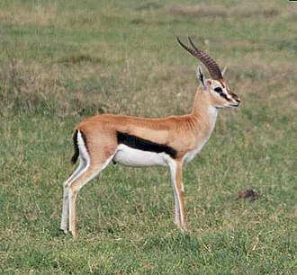
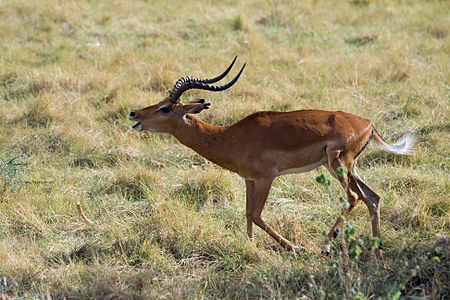

Die Hauptnahrung der Geparde stellen verschiedene Gazellen Arten dar. Auch Gnu Kälber und andere Huftiere gehören zu ihrem Speiseplan. am Tag fressen sie durchschnittlich zwei Kilogramm Fleisch. Ab und zu ernähren sich Geparden auch von Hasen.

In Ostafrika ernähren sich Geparden von Gazellen und Impalas (Art der Gazellen).
 Meist ernähren sich Geparden von Tieren unter 60 kg. In Notzeiten jagt ein Gepard aber auch Hasen, Kaninchen und Vögel.
Zur Jagd pirschen sich Geparden sehr nah an ihre Opfer an, um es zu erledigen laufen Geparde in die Beine der fliehenden Tiere, damit diese aus dem Gleichgewicht kommen.
Sobald das Tier fällt, tötet der Gepard es mit einem Biss in die Kehle.
Um das Beutetier vor anderen Räubern fernzuhalten, müssen Geparde ihre Opfer sehr schnell fressen.
Die wahnsinnige Geschwindigkeit können Geparde bei ihrer Jagd gut ausspielen. Hierbei erreichen die athletischen Tiere waghalsige Geschwindigkeiten von mehr als 100km/h.
Jedoch können die Tiere diese Geschwindigkeit nicht dauerhaft durchhalten; sie sind sogenannte Kurzstreckensprinter.
Erwischen Geparde ihre Beute bei der Jagd nicht rechtzeitig, müssen sie aufgeben. => Ihre Beute läuft davon.

Hier die Quellen zu den Bildern und Infos